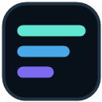

Sign in
Authenticate Claude Code or Codex normally. Add DeepSeek and Z.AI only if you use them.

QuotaHushLocal companion · Windows & Linux
Keep Claude Code, Codex, DeepSeek, and Z.AI limits in sight from Chromium or VS Code—without sending your credentials or usage to another service.
Free and open source · MIT licensed · No telemetry
Session · resets in 2h 18m
Weekly · resets Monday
One local connection
QuotaHush reads credentials already stored by your CLI tools or keys you add locally. Clients receive normalized usage data—not your tokens.
Authenticate Claude Code or Codex normally. Add DeepSeek and Z.AI only if you use them.
A small local service queries enabled providers and binds exclusively to 127.0.0.1.
Use the Chromium popup, the VS Code status bar, or both. Each refreshes automatically.
Get started
Then add whichever client fits your workflow. You only need one Companion per computer.
QuotaHush-Setup-x64-<version>.exe from the latest release.Python is not required. Setup downloads no additional code and QuotaHush starts automatically when you sign in.
Unsigned preview: Windows may show “Unknown publisher”. Verify the release checksum or GitHub provenance before running it.
Install for your user account with one command:
curl --proto '=https' --tlsv1.2 -fsSL \
https://raw.githubusercontent.com/Wenress/QuotaHush/main/install.sh | bashUses a systemd --user service and does not require root access.
To enable DeepSeek or Z.AI on Windows, open %LOCALAPPDATA%\QuotaHush\.var.env and add DEEPSEEK_API_KEY, DEEPSEEK_PLATFORM_TOKEN, or ZAI_API_KEY. Providers without a key stay hidden.
Open the health endpoint after installation. A healthy Companion identifies itself as QuotaHush.
127.0.0.1:8765/health
Chromium
Download the Chromium ZIP, extract it, then use Load unpacked from Chrome, Edge, or Brave's extension page.
Get the Chromium extension →Visual Studio Code
Install straight from the marketplace, or download the VSIX and choose Install from VSIX… in the Extensions view.
Private by design
No QuotaHush cloud. Provider requests go directly from your computer to the corresponding provider.
No prompt access. QuotaHush processes usage limits, balances, and reset times—not conversations.
No tracking. There is no project-operated analytics, advertising, telemetry, or crash reporting.
Read the privacy policy →Good to know
No. Configure any one provider. Missing providers do not prevent the others from working.
Not on Windows when you use the standalone Companion. Linux and source installations require Python 3.11 or newer.
No. It listens only on 127.0.0.1, the loopback address of your computer.
QuotaHush does not currently use a paid Authenticode certificate. Download only from the official GitHub Releases page and verify the published SHA-256 checksum or GitHub artifact attestation.